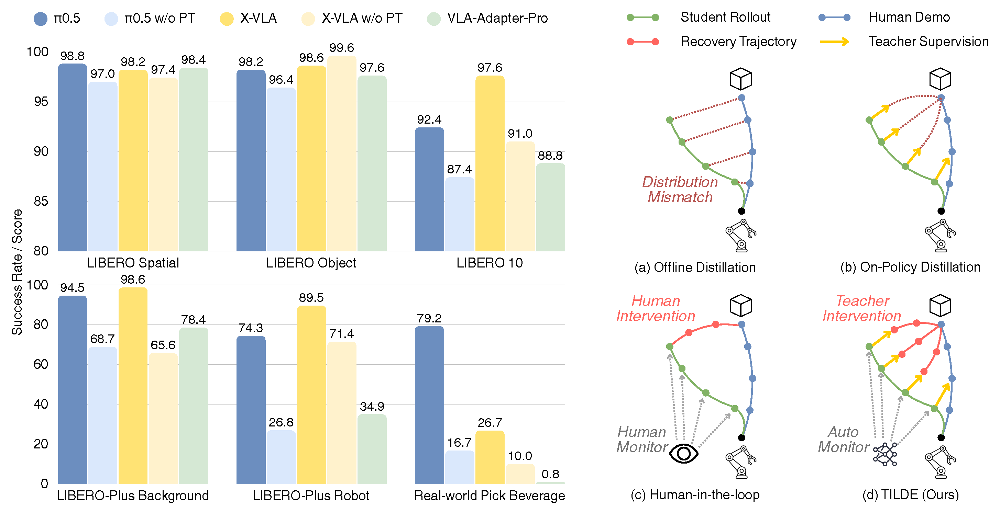
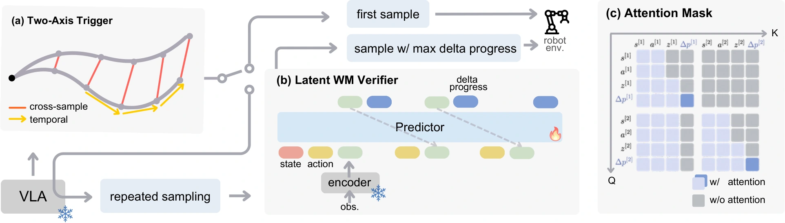

Yantong Liu
I’m an undergraduate student in Computer Science at The University of Hong Kong. I conduct research at HKU SAIL Lab, advised by Prof. Hengshuang Zhao. In Spring 2026, I was an exchange student at Columbia University.
My research interests lie in embodied AI, world models, and agentic robotics. I am particularly interested in developing highly generalizable robot policies that learn from interaction and continually adapt to new tasks and environments. More broadly, I hope to build robotic systems that connect perception, reasoning, and action to perform diverse manipulation tasks efficiently and safely in the physical world.
Education
Columbia University
Publications
* Equal contribution
arXiv

arXiv

Experiences
Research on embodied AI and agentic robotics for generalizable and adaptive robotic manipulation.
Lagram Technologies
Led the development of a multi-agent system for DEKRA that transformed machine-collected tables and images into structured data and automatically completed inspection, verification, and certification forms of up to 80 pages.
Diagnosed and resolved champion-ability gameplay bugs in League of Legends: Wild Rift, and developed a visual gameplay editor that enabled designers to iterate on content more efficiently.
Honors & Awards
Class of 1978 Scholarship
HKU Engineering Alumni Association Scholarship
Dean’s Honours List
Dean’s Honours List
Lau Chor-Tak Scholarship for Outstanding Mainland Students
HKU Undergraduate Entrance Scholarship for Outstanding Academic Talents
Services
Chinese Students and Scholars Association, Undergraduate Department (CSSAUD)
Led the Alumni Forum and Freshman Sharing Session, coordinated with mainland undergraduate student associations across Hong Kong universities, and represented CSSAUD at joint ceremonies and inter-university events.
- Teaching Assistant: ENGG1330 (Python), HKU
- Volunteer: Student Ambassador for HKU Alumni Day
- Reviewer: CVPR 2027
Let’s connect